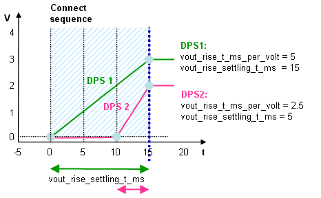
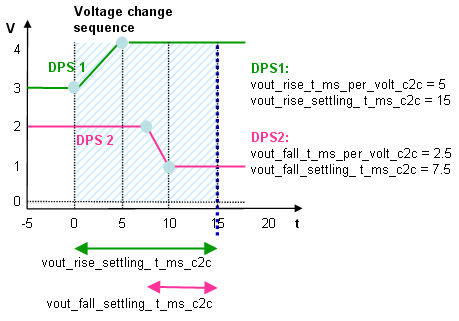
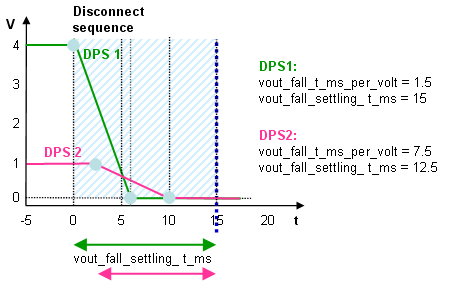

Voltage ramp example
The voltage ramp parameters (vout_rise_..., vout_fall_...) allow to specify setup times and slew rates separately for rising and falling DPS voltage transitions. This example illustrates the effect of different slew rates and settling time settings.
- vout_rise_t_ms_per_volt: the slew rate for the rising (positive) edge in ms/V
- vout_fall_t_ms_per_volt: the slew rate for the falling (negative) edge in ms/V
- vout_rise_settling_t_ms: the settling time for rising edge in ms
- vout_fall_settling_t_ms: the settling time for falling edge in ms
The above parameters (vout_rise..., vout_fall...) are used for connect and disconnect cases.
The ..._c2c parameters below are optional. If omitted, the above vout_rise.../vout_fall... parameters are used instead.
- vout_rise_t_ms_per_volt_c2c: the slew rate for the rising (positive) edge in ms/V for "connect-to-connect-" cases
- vout_fall_t_ms_per_volt_c2c: the slew rate for the falling (negative) edge in ms/V for "connect-to-connect-" cases
- vout_rise_settling_t_ms_c2c: the settling time for rising edge in ms for "connect-to-connect-" cases
- vout_fall_settling_t_ms_c2c: the settling time for falling edge in ms for "connect-to-connect-" cases
If specified, the ..._c2c parameters are used for "connect-to-connect-" cases, that is for level changes caused by a reprogramming of the output voltage within one DPS set, or by switching to another DPS set while the DPS is connected.



Using the voltage ramp parameters
You cannot use the t_ms parameter together with any of the vout_rise_t_ms_per_volt(_c2c), vout_fall_t_ms_per_volt(_c2c), vout_rise_settling_t_ms(_c2c), vout_fall_settling_t_ms(_c2c) parameters. Use either t_ms or the other parameters. Valid examples are:
t_ms=50
or
vout_rise_t_ms_per_volt=10 vout_fall_t_ms_per_volt=10 vout_rise_settling_t_ms=50 vout_fall_settling_t_ms=70
Functional changes
- Introduced in SmarTest 7.1.0